A PAGE FROM THE NOTEBOOK
【どっち？】ケトルと電気ポットの費用は？掲載値で5年分を試算
#家電#電気代#電気ケトル#電気ポット#お金IN THIS NOTE
この記事でわかること
掲載の電気代は何を測った数字か
電気代の単価は、どのメーカーも同じです。家電の業界団体である全国家庭電気製品公正取引協議会の目安単価は1kWhあたり31円（税込）で、2022年7月22日に改定された値が今も使われています。象印もティファールもこの31円で計算しています。ただし、そろっているのは単価だけで、測り方はケトルとポットで違います。実際の請求額も、契約プランや燃料費調整で変わります。比べる条件の違いは、この議題にまとめて書きます。
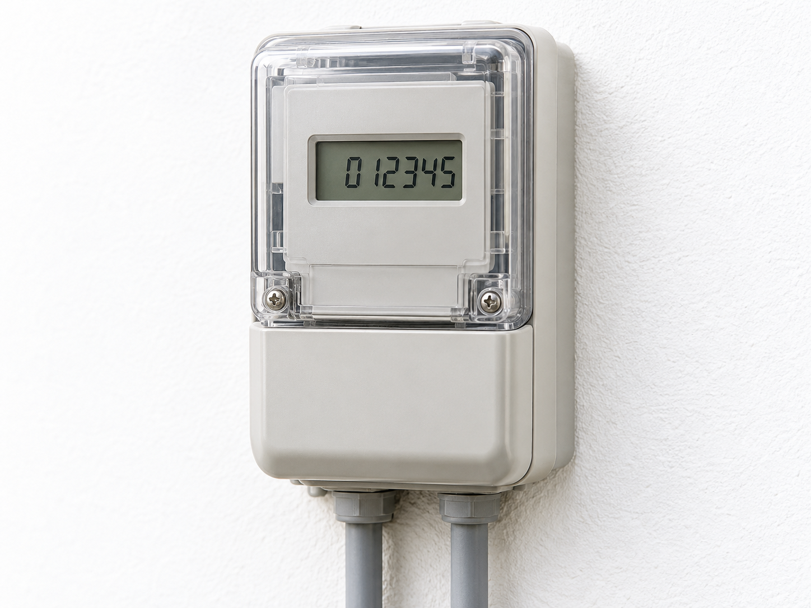
ケトルの数字は、1回沸かした分の電気代です。ティファールの比較ページでは、ジャスティン プラス ロック1.0Lで1Lを沸かす電気代を約3.35円とし、自動で電源が切れるまでを基準にした計測値だと注記しています。ジャスティン1.2L（定格1250W）は、140mlで約0.72円です。こちらも自動電源オフ基準で、水温と室温は23℃です。沸かし終えてから後の電気は入っていません。
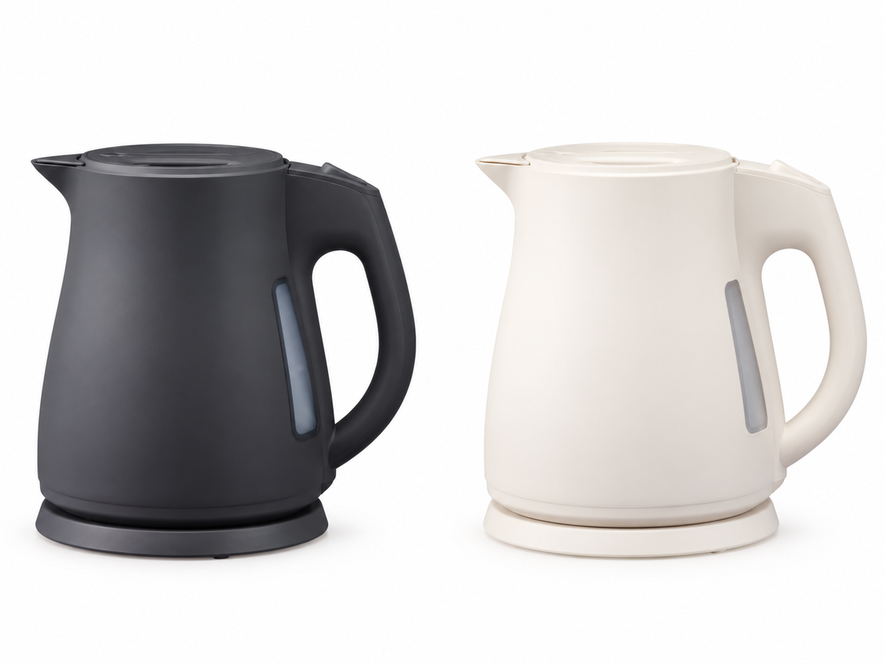
ポットの数字は、日本電機工業会の自主基準（HD-112）に基づく1日分の掲載値です。室温23℃で、湯沸かし2回と再沸とう1回、90℃の保温を23時間行い、それを365日続けます。象印CV-WB22（2.2L）は1日0.46kWh、年168kWh、年約5,200円です。電動ポットCP-EA20（2.0L）は1日0.98kWh、年357kWh、年約11,000円です。室温や回数、保温の設定は同じです。ただ、容量は2.2Lと2.0Lで違い、水の量などの細かい条件は公式ページに書かれていません。掲載値どうしは比べられますが、同じ量の湯を使った結果とまでは言えません。
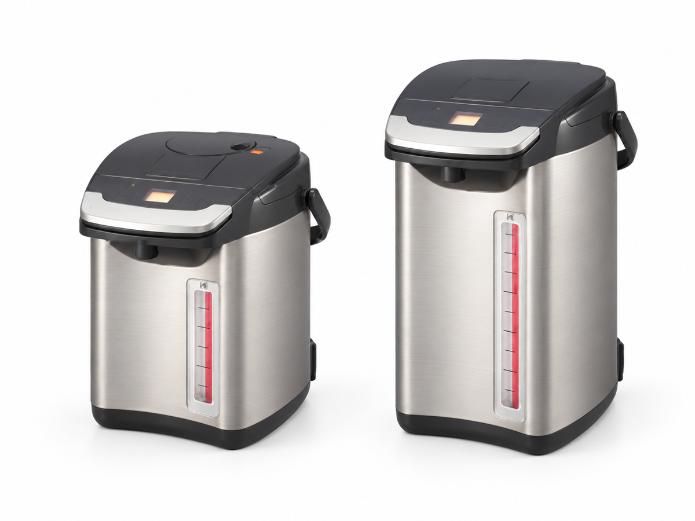
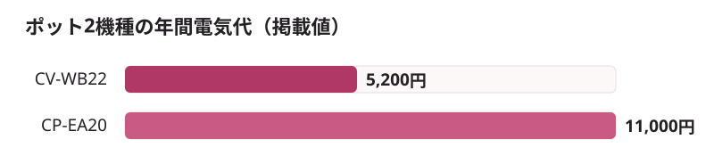
沸く時間も、何を基準にしたかが数字ごとに違います。ティファールの比較ページで、ケトルの1L約5分15秒は「水温室温23℃で水が100℃に達するまで」と注記されています。一方、ポットの約9分は「自社実測」とだけ書かれています。ジャスティン1.2Lの140ml約1分は、沸騰するまでの時間です。自動電源オフ基準という注記が付いているのは、ケトルの電気代のほうです。
ティファールの比較ページは、消費電力量0.65kWh/日の2.2Lポットを、1日1Lあたり約9.16円としています。0.65×31÷2.2を計算すると約9.16円になります。容量の2.2Lで割って1L分にした可能性があります。しかし、ページに換算方法は書かれておらず、メーカーがこの割り算をしたのか、実際に1Lを使ったときの費用を表しているのかは確かめられません。そのため、この9.16円と「ケトルは約3分の1」という見せ方は、比べる根拠に使いません。
掲載値から言えることと言えないこと
掲載値を1日あたりに直すと、CV-WB22は0.46×31＝約14.3円、CP-EA20は0.98×31＝約30.4円です。ケトルは1Lを1回沸かすと約3.35円です。ただし、前の議題で見たとおり、ポットはHD-112の1日分、ケトルは1Lを1回の値です。数字の単位をそろえただけで、同じ使い方で比べた結果ではありません。
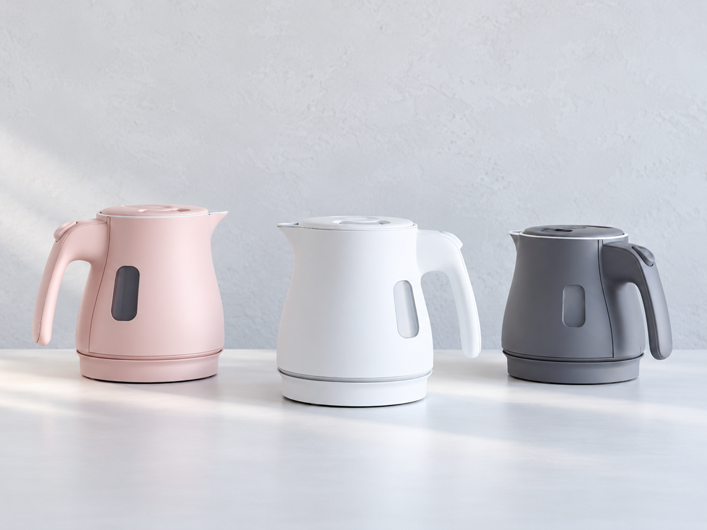
ポットの1日分をケトルの1L分で割ると、約4.3L（CV-WB22）、約9L（CP-EA20）という値が出ます。けれども、これは使う量が変わってもポットの電気代が一定だと見なした場合の値です。たくさん出して水を足せば、ポットも沸かし直す回数が増え、電気代が上がるはずです（推測）。今回確認した資料には、同じ湯量と同じ保温時間で両方を測ったものはありませんでした。どこで逆転するかは確かめられません。
確かめられる範囲では、条件付きの計算になります。ケトルで1Lを1日1回沸かすと、3.35×365＝年約1,223円です。1日4回なら3.35×4×365＝年約4,891円です（自分で計算）。どちらもCV-WB22の掲載値である年約5,200円を下回ります。とはいえ、ポットを1日4Lの使い方で測った値ではありません。言えるのは「この掲載値よりケトルの計算値が小さい」ということまでです。
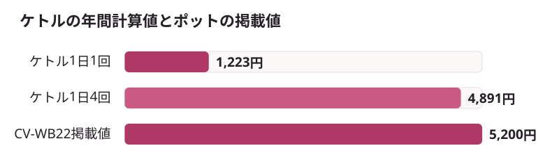
どちらの数字も、それぞれ決まった条件での目安です。ケトルは、冷めた湯を沸かし直せば、そのたびに1回分の電気代がかかります。ポットの掲載値は、季節や部屋の温度で変わるとメーカーが書いています。寒い台所では、保温の電気が掲載値より増えると考えられます（推測）。
本体価格を足した5年の仮定試算
本体価格を確認します。ティファールの公式サイトでは、ジャスティン1.2Lが税込5,980円です。価格.comでは、2026年10月27日に見たとき、象印CV-WB22が20,790円、CP-EA20が11,600円と表示されていました。ただ、価格.comのページは本文の一部が文字化けしていて、税込かどうか、送料や販売条件は確かめられませんでした。CV-WB22の発売時期も、象印公式は2024年8月、価格.comは2018年10月と食い違っており、どちらが正しいかは分かりません。そのため、読み取れた表示額を使った暫定の試算として扱います。
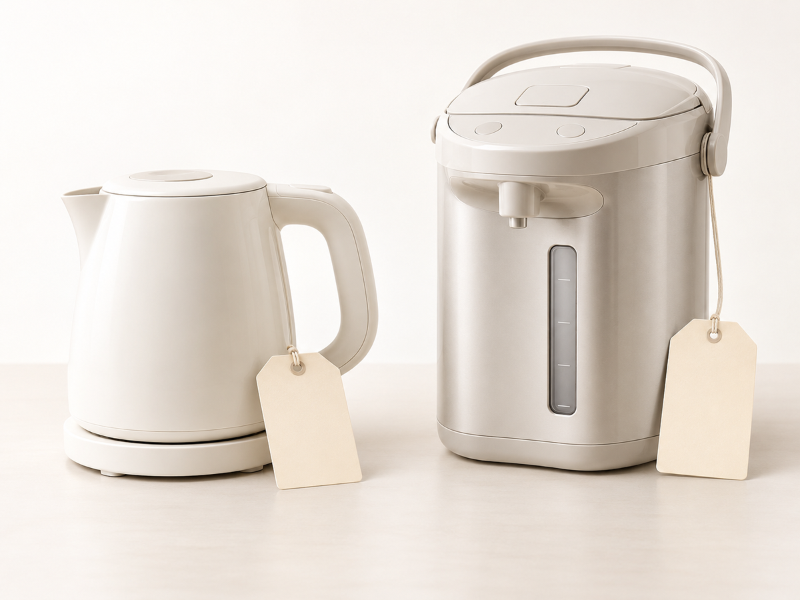
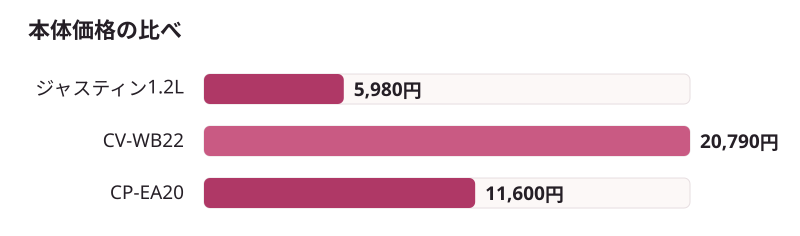
ケトルの5年総額は、別の機種の数字を組み合わせた仮定です。電気代の3.35円/Lはジャスティン プラス ロック1.0Lの値で、本体価格の5,980円はジャスティン1.2Lの値です。1.0Lと同じ機種の公式価格は見つかりませんでした。1日1Lを1回なら5,980＋3.35×365×5＝約12,094円です。1日4回なら5,980＋3.35×4×365×5＝30,435円です（自分で計算）。特定の製品の5年総額としては扱えません。
ポットの5年総額は、表示額に掲載値の年間電気代を足した仮定です。CV-WB22は20,790＋5,200×5＝46,790円、CP-EA20は11,600＋11,000×5＝66,600円です（自分で計算）。本体価格の差は9,190円、年間電気代の差は5,800円です。この表示額と年額が続くとすると、9,190÷5,800＝約1.58年で総額が逆転します。本体が安いポットほど得になるとは限りません。
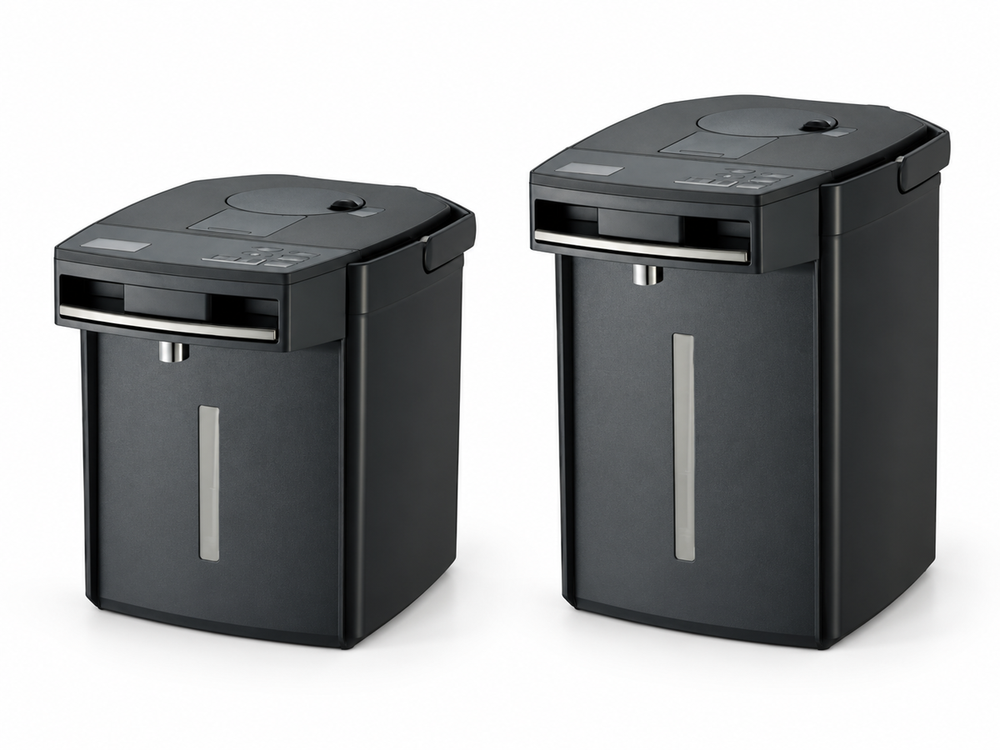
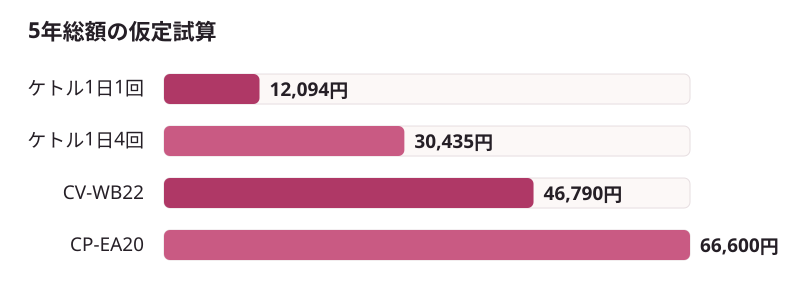
電気代だけの比較と、本体を含めた総額の比較は、分けて考えます。電気代だけでは、同じ使い方での逆転の条件は確かめられません。総額では、今回取り上げた機種の表示額で、ケトルとポットの本体価格に5,620円（CP-EA20）から14,810円（CV-WB22）の差があります。この差はケトルが有利になる方向に働きます。故障や買い替えの頻度は、今回の資料では分からなかったので、計算に入れていません。
ポットの強みと節電機能の条件
ポットには、湯をいつでもすぐ出せるという強みがあります。象印の記事（2026年2月4日公開）は、ポットは多めの湯を沸かして保温したい人や、大家族、来客の多い家庭に向くとしています。一方、ケトルは使う分だけ沸かせるので、少人数の家庭と相性が良いとしています。長い時間保温すると、電気代が高くなりうるとも書いています。ただ、これは用途から見た目安で、人数ごとの湯の使用量を示した資料ではありません。
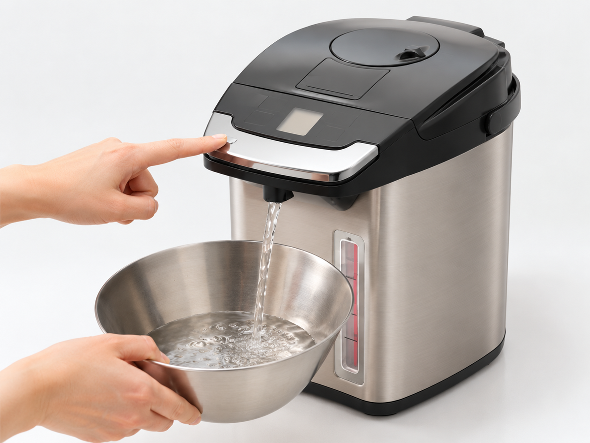
CV-WB22には、保温の電気を減らす機能があります。暗くなると保温ヒーターを切る光省エネモードと、2時間操作しないとヒーターを切る省エネモードです。ただし、どちらも湯温が約70℃まで下がると、70℃での保温を始めます。電気がまったく流れなくなるわけではなく、温度の下限がある節電です。そのため、90〜98℃の湯をいつでもすぐ出したいときには、この機能は合いません。ほかに、沸とうさせずに設定温度まで沸かす沸とうセーブと、6〜10時間から選べる節約タイマーもあります。
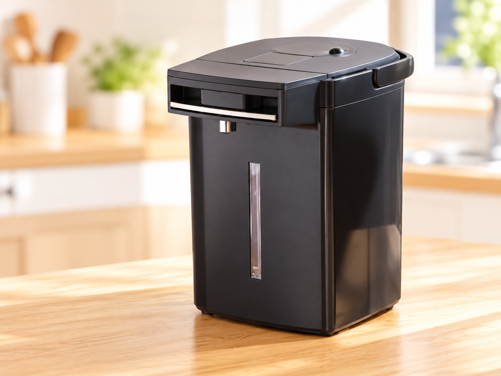
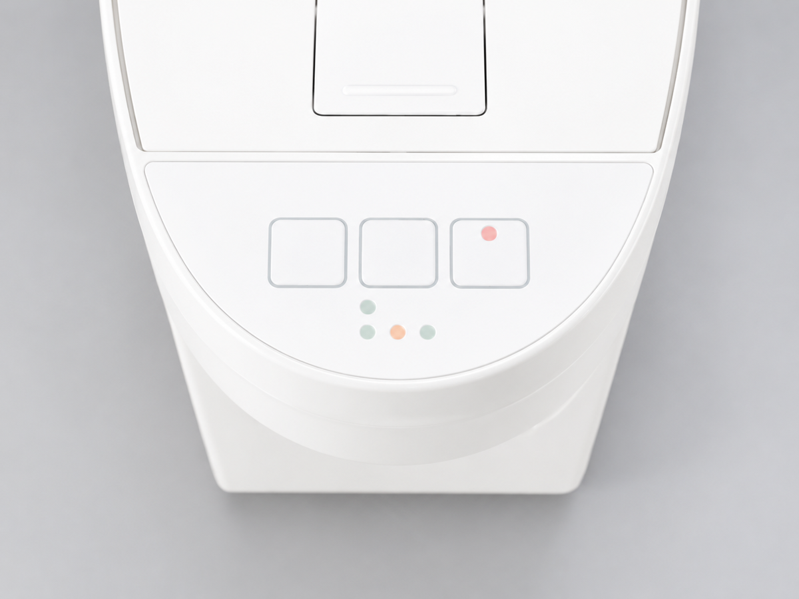
これらの機能で電気代がどれだけ下がるかは、公式ページに数字がなく、確かめられませんでした。掲載値の条件である90℃保温23時間より、電気が減る方向に働くとは考えられます（推測）。
CP-EA20の保温の構造は、今回読んだ公式ページでは確かめていません。そのため、2機種の差を断熱の違いのせいだとは言い切れません。確かなのは、HD-112に基づく掲載値で、年間の消費電力量が168kWhと357kWhだということです。
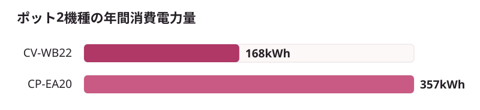
結論
同じ使い方での比較は見つからず逆転条件は不明。掲載値はケトル1Lで約3.35円、省エネポットは試験で1日約14円。異機種を組んだ5年の仮定試算では、今回の機種の表示額でケトルが安い。
見解
調べて分かった事実です。単価は31円/kWhでそろっています。ケトルは1Lを1回沸かすと約3.35円です。ポットはHD-112に基づく掲載値で、CV-WB22が年約5,200円、CP-EA20が年約11,000円です。ティファールの約9.16円は、1日分から1L分への換算根拠を確かめられなかったので使いませんでした。今回確認した資料には、同じ湯量と同じ保温時間で両方を測ったものはなく、逆転の条件は分かりません。ここからは私の見解です。1Lずつ1日に数回沸かせば足り、保温がいらない使い方なら、ケトルを選ぶのが無難だと考えます。ケトルの計算値（1日4回で年約4,891円）はポットの掲載値より小さく、今回の機種の表示額では本体も安いからです。一方、90〜98℃の湯をいつでもすぐ出したいなら、ポットの便利さに払う価値があります。その場合は、掲載値の消費電力量が小さい機種を選びます。省エネモードは約70℃まで温度が下がるので、夜や外出中など湯を使わない時間に限って使うのがよいと考えます。電気料金が上がれば、実際の消費電力量が多い機器ほど金額の増え方が大きくなります。どちらが多くなるかは、使い方で決まります（推測）。